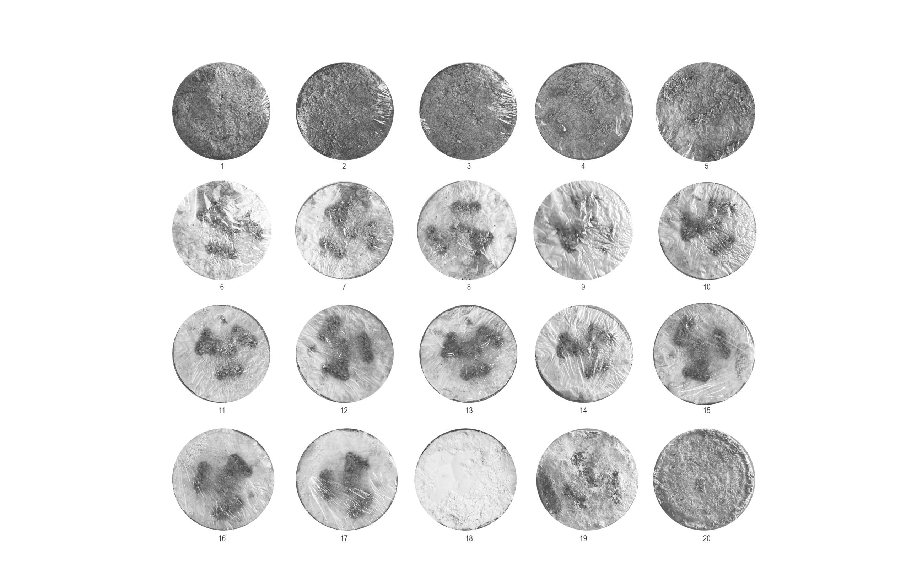

transport
Illustrated in three parts, this project redesigns a modular acoustical system using bio-based wood-mycelium composites. It introduces eco-friendly, scalable, and glue-free methods to tackle resource depletion and waste while improving building performance.
